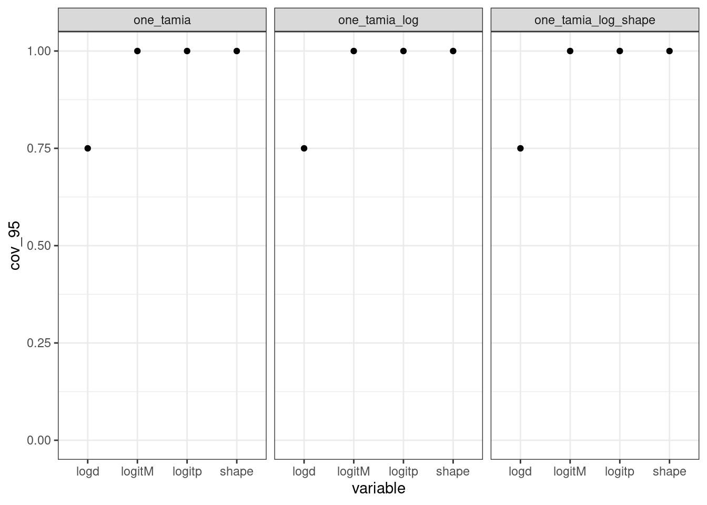
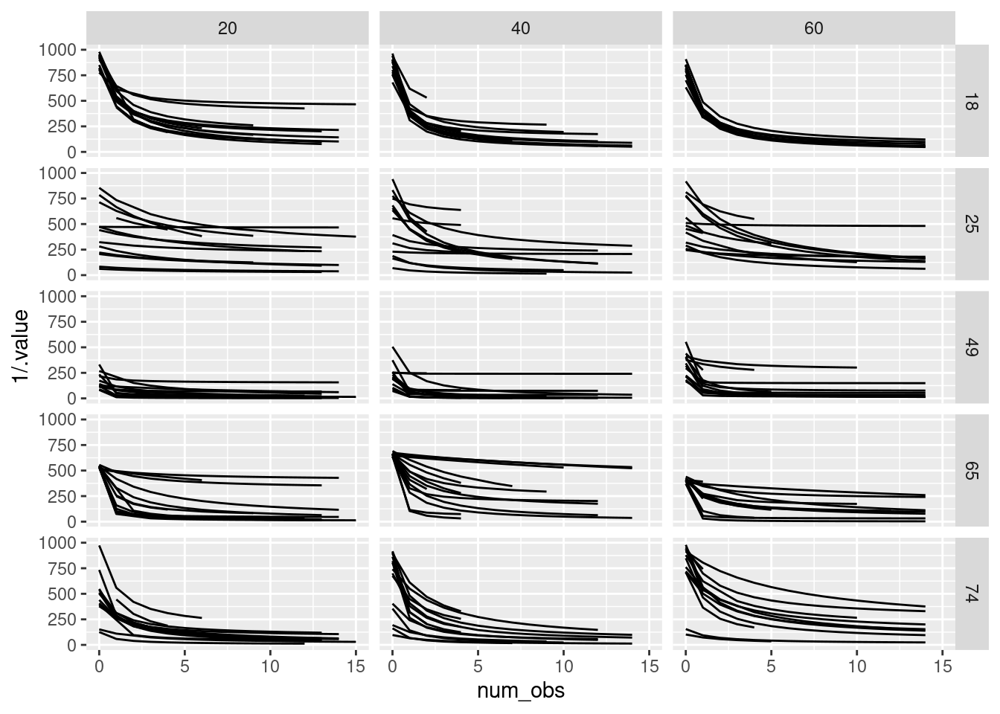
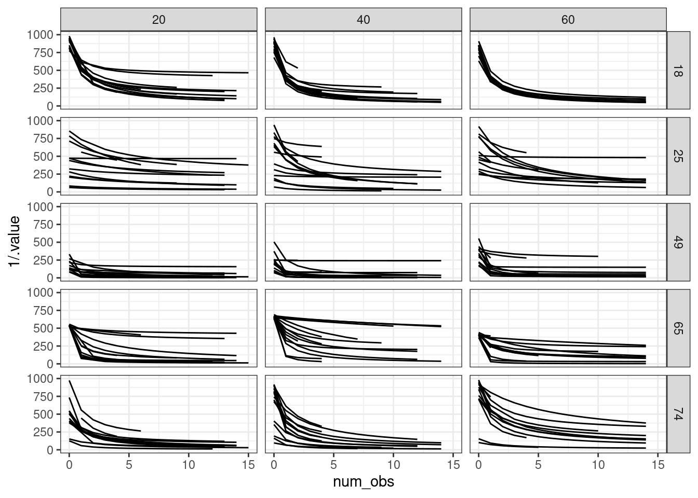

tar_load(one_curve)
one_curve
Simulations to measure the performance of a nonlinear model of habituation
This document is created to validate the following model of Flight Initiation distance:
\[ \begin{align} \text{FID} &\sim \text{Gamma}(\alpha, \alpha/\mu) \\ \mu &\sim M \times 1000 \times \left(1 - \frac{p \times X}{d + X} \right) \\ \text{logit}(M) &= M_0 + \beta_{M, i}\\ \text{logit}(p) &= p_0 + \beta_{p, i}\\ \text{log}(d) &= d_0 + \beta_{d, i}\\ \begin{bmatrix} \beta_{M} \ \beta_{p} \ \beta_{d} \end{bmatrix} &\sim N\left(\begin{bmatrix} 0 \ 0 \ 0 \end{bmatrix}, \Sigma\right) \\ \Sigma &= \text{diag}(\sigma_M, \sigma_p, \sigma_d) \times \text{R} \times \text{diag}(\sigma_M, \sigma_p, \sigma_d) \\ \sigma_M &\sim \text{Exponential}(4) \\ \sigma_p &\sim \text{Exponential}(2) \\ \sigma_d &\sim \text{Exponential}(2) \\ \text{R} &\sim \text{LKJ}(2) \\ M_0 &\sim N(0.5, 0.5)\\ p_0 &\sim N(-1, 0.2)\\ d_0 &\sim N(1.5, 0.5)\\ \alpha &\sim \text{Gamma}(6.25, .25) \end{align} \]
Begin by plotting the model’s curve:
tar_load(one_curve)
one_curve
tar_load(one_sim_plot)
one_sim_plot
define a model that matches the above in brms:
tar_read(model_bf)
#> FID ~ inv_logit(logitM) * 1000 * (1 - inv_logit(logitp) * num_obs/(exp(logd) + num_obs))
#> logitM ~ 1 + (1 | t | tamia_id)
#> logitp ~ 1 + (1 | t | tamia_id)
#> logd ~ 1 + (1 | t | tamia_id)and define priors that correspond to this model as well:
tar_read(model_priors)
#> prior class coef group resp dpar nlpar lb ub source
#> lkj(2) cor <NA> <NA> user
#> exponential(2) sd logd <NA> <NA> user
#> exponential(4) sd logitM <NA> <NA> user
#> exponential(2) sd logitp <NA> <NA> user
#> normal(1.5, 0.5) b logd <NA> <NA> user
#> normal(0.5, 0.5) b logitM <NA> <NA> user
#> normal(1, 0.5) b logitp <NA> <NA> user
#> gamma(6.25, 0.25) shape <NA> <NA> userstart to plot the prior predictive distribution
tar_load(model_prior_sim)
un_tamia <- tibble::tibble(tamia_id = "un_tamia",
num_obs = 1:20)
un_tamia_pred <- un_tamia |>
tidybayes::add_predicted_draws(model_prior_sim,
ndraws = 15,
seed = 1234)
un_tamia_expect <- un_tamia |>
tidybayes::add_epred_draws(model_prior_sim,
ndraws = 15,
seed = 1234)
un_tamia_expect |>
left_join(un_tamia_pred) |>
ggplot2::ggplot(ggplot2::aes(x = num_obs, y = .prediction)) +
ggplot2::geom_point() +
ggplot2::geom_line(aes(y = .epred)) +
ggplot2::facet_wrap(~.draw, ncol=5) +
labs(x = "Number of observations", y = "FID") +
theme_bw()
#> Joining with `by = join_by(tamia_id, num_obs, .row, .chain, .iteration, .draw)`
# this is another way to do the same sort of process:
tar_load(prior_predictive_df)
prior_predictive_df |>
ggplot(aes(x = num_obs,
y = epred)) +
geom_line() +
geom_point(aes(y = preds)) +
facet_wrap(~draw_id, ncol = 5) +
coord_cartesian(ylim = c(0, 1200)) +
geom_hline(yintercept = 1000, lty = 2) +
theme_bw()
## simulate from priors to get model parameters
n_tamia <- 30
# 'fixed' and hyperparameters
true_cor <- rethinking::rlkjcorr(1, K = 3, eta = 2)
true_sd_logd <- rexp(1, 2)
true_sd_logitM <- rexp(1, 4)
true_sd_logitp <- rexp(1, 2)
true_b_logd <- rnorm(1, 1.5, sd = .5)
true_b_logitM <- rnorm(1, .5, .5)
true_b_logitp <- rnorm(1, -1, .2)
true_shape <- rgamma(1, 6.25, .25)
# tamia parameters
VarCov_tamia <-
diag(c(true_sd_logitM,
true_sd_logitp,
true_sd_logd)) %*% true_cor %*%
diag(c(true_sd_logitM,
true_sd_logitp,
true_sd_logd))
true_tamia_params <- MASS::mvrnorm(n = n_tamia, mu = c(0,0,0), Sigma = VarCov_tamia)
# linear predictors for all three parts of the model
# logit_M <- true_b_logitM + trueThis is how the model predicts for just ONE animal. How does the model think about variation? In other words, what are the effects of the hyperpriors on individual variation in \(M\), \(d\) and \(p\)?
tar_load(fivetamia_prior_predictive_df)
fivetamia_prior_predictive_df |>
ggplot(aes(x = num_obs,
y = epred,
group = tamia_id)) +
geom_line() +
facet_wrap(~draw_id, ncol = 5) +
# coord_cartesian(ylim = c(0, 1000)) +
# geom_hline(yintercept = 1000, lty = 2) +
theme_bw()
i admit I find this whole thing a little difficult to conceptualize, since the parameters are WIDE but the data is long
five_tamia_data <- fivetamia_prior_predictive_df |>
relocate(num_obs, .before = epred) |>
select(-(epred:tamia_id)) |>
pivot_longer(cols = starts_with("r"), names_to = "tamia_eff", values_to = "val") |>
mutate(tamia_id = stringr::str_extract(tamia_eff, "(?<=\\[)(.*?)(?=\\,)"),
pname = stringr::str_extract(tamia_eff, "(?<=\\_{2})(.*?)(?=\\[)")) |>
select(-tamia_eff) |>
ungroup() |>
distinct() |>
pivot_wider(names_from = "pname", values_from = "val")
five_tamia_data |>
mutate(M = plogis(b_logitM_Intercept + logitM),
d = exp(b_logd_Intercept + logd),
p = plogis(b_logitp_Intercept + logitp),
mu = 1000*M*(1 - (p*num_obs)/(d + num_obs))) |>
ggplot(aes(x = num_obs, y = mu, group = tamia_id)) + geom_line() +
facet_wrap( ~ draw_id)
I would like to see if I can fit the compiled model to each of these simulated datasets.
tar_load(many_models)
many_posterior_summaries <- many_models |>
map(brms::posterior_summary) |>
map(as.data.frame) |>
map(tibble::rownames_to_column, var = "param_name")
tar_load(fivetamia_prior_predictive_draws)
demo <- fivetamia_prior_predictive_draws |>
ungroup() |>
select(draw_id, b_logitM_Intercept:`r_tamia_id__logd[tamia5,Intercept]`) |>
pivot_longer(cols = -draw_id, names_to = "param_name", values_to = "true_value") |>
group_by(draw_id) |>
nest() |>
ungroup() |>
mutate(post = many_posterior_summaries) |>
rowwise() |>
mutate(compare = list(left_join(data, post)))
#> Joining with `by = join_by(param_name)`
#> Joining with `by = join_by(param_name)`
#> Joining with `by = join_by(param_name)`
#> Joining with `by = join_by(param_name)`
#> Joining with `by = join_by(param_name)`
#> Joining with `by = join_by(param_name)`
#> Joining with `by = join_by(param_name)`
#> Joining with `by = join_by(param_name)`
#> Joining with `by = join_by(param_name)`
#> Joining with `by = join_by(param_name)`
#> Joining with `by = join_by(param_name)`
#> Joining with `by = join_by(param_name)`
#> Joining with `by = join_by(param_name)`
#> Joining with `by = join_by(param_name)`
#> Joining with `by = join_by(param_name)`
#> Joining with `by = join_by(param_name)`
#> Joining with `by = join_by(param_name)`
#> Joining with `by = join_by(param_name)`
#> Joining with `by = join_by(param_name)`
#> Joining with `by = join_by(param_name)`
demo |>
select(draw_id, compare) |>
unnest(cols = "compare") |>
mutate(true_covered = true_value > Q2.5 & true_value < Q97.5) |>
group_by(param_name) |>
summarize(percent_cov = sum(true_covered)/n_distinct(draw_id)) |>
ggplot(aes(y = param_name, x = percent_cov)) +
geom_point()